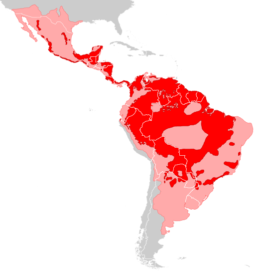
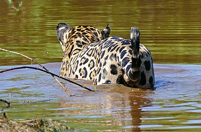

Table of Contents
The jaguar is the third largest cat species in the world and the largest in the Americas. Its distinct coat is made up of black and tan spots, similar to that of a cheetah. The jaguar has a powerful bite that allows it to break through the shells of different turtle species, as well as the skull of some mammals.
The jaguar's habitat spans all the way from the Southwestern regions of the United States, through many parts of Central America, and down to Northern Argentia. They inhabit both forrested and open terrain, but their favorite habitats are tropical and subtropical forrests like the amazon rainforest, wetlands, and wooded areas. They are proficient swimmers and opportunistic hunters, so they are most commonly stalking their prey. Jaguars have become a keystone species, playing an important role in balancing their ecosystem and limiting the population of animals lower in the food chain.
Jaguar Distribution
Etymology
"Jaguar" might have originated from the Tupi–Guarani word yaguara, which means 'wild beast that overcomes its prey at a bound'.
Behavior
Jaguars are mostly active at night, except for those in dense regions of the Amazon Rainforest who hunt primarily during the day. Overall, their activity patterns align with the activity of their prey. They are good swimmers and have been recorded moving between islands and shores. Additionally, jaguars are good climbers.
Ecological Role
The adult jaguar is an apex predator, so it is at the top of the food chain in its ecosystem. They have also been deemed a keystone species, assuming they control the population of herbivorous and seed-eating mammals, which maintains the structural integrity of forest systems. This hypothesis is still under further testing.